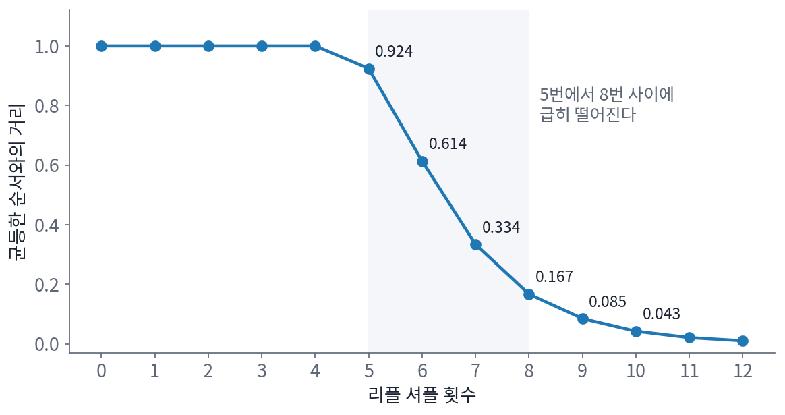

섞임 시간: 카드는 몇 번 섞어야 하나
에르고드 정리는 사슬을 「오래」 돌리면 처음을 잊는다고 말한다. 그런데 오래란 얼마일까? 앞에서 본 사슬 가운데 오네긴 사슬은 10글자 남짓이면 처음 글자를 거의 잊었고, 머무를 확률이 0.9인 끈적한 사슬은 훨씬 오래 걸렸다. 사슬을 몇 걸음 돌려야 처음을 잊었다고 말할 수 있는지를 숫자 하나로 잴 수 있을까? 이 물음에 가장 유명한 답을 준 것은 뜻밖에도 카드놀이였다.
역사: 일곱 번 섞기
카드를 섞는 일도 마르코프 사슬이다. 덱의 순서 하나하나가 상태이고, 한 번 섞을 때마다 지금 순서만 보고 다음 순서가 정해진다. 카드 52장의 순서는 52! ≈ 8 × 10^67가지이고, 잘 섞인 덱이란 이 순서들이 모두 같은 확률로 나오는 덱이다. 카지노와 카드 게임에서는 덱을 몇 번 섞어야 충분한지가 실제 돈이 걸린 물음이었다.
데이브 바이어와 퍼시 다이아코니스는 1992년 논문 「도브테일 셔플을 굴까지 쫓아가기」에서, 덱을 두 무더기로 갈라 엄지로 튕기며 한 장씩 섞어 합치는 리플 셔플을 정확히 계산했다. 그들이 쓴 모형은 덱을 이항분포에 따라 두 무더기로 가르고, 두 무더기에 남은 장 수에 비례하는 확률로 한 장씩 떨어뜨리는 것이다. 이 모형에서 k번 섞은 뒤 어떤 순서가 나올 확률은 그 순서에 「오르는 줄」이 몇 개인지만으로 정해진다. 오르는 줄은 처음 덱에서의 순서가 이어지는 카드 묶음이고, 리플 셔플 한 번은 오르는 줄의 수를 많아야 두 배로 늘린다. 이 식으로 계산한 결과는 「일곱 번이면 충분하다」로 널리 알려졌다.
52장을 몇 번 섞으면
k번 섞은 덱이 얼마나 덜 섞였는지를 재려면, k번 섞은 뒤 순서들의 분포와 모든 순서가 같은 확률인 분포가 얼마나 다른지를 숫자 하나로 적어야 한다. 바이어와 다이아코니스가 쓴 잣대는 두 분포의 확률 차이의 절댓값을 모든 순서에 대해 더해 반으로 나눈 값, 곧 총변동 거리다. 두 분포가 같으면 0이고 겹치는 곳이 전혀 없으면 1이다. 이 거리는 「어떤 사건을 골라도 두 분포가 그 사건에 매기는 확률의 차이가 이 값을 넘지 않는다」는 뜻이라, 거리가 0.1이면 순서에 관한 어떤 내기를 걸어도 잘 섞인 덱과 확률이 0.1보다 더 차이 나지 않는다.
오르는 줄의 식으로 카드 52장의 거리를 정확히 계산하면 다음과 같다.
| 리플 셔플 횟수 | 1~4 | 5 | 6 | 7 | 8 | 9 | 10 |
|---|---|---|---|---|---|---|---|
| 균등한 순서와의 거리 | 1.000 | 0.924 | 0.614 | 0.334 | 0.167 | 0.085 | 0.043 |
네 번까지는 거리가 거의 1이다. 처음 순서의 흔적이 너무 뚜렷해서, 덱을 보고 섞기 전 순서를 거의 틀림없이 가려낼 수 있다는 뜻이다. 그러다 다섯 번째부터 여덟 번째 사이에 거리가 급히 떨어지고, 그 뒤로는 한 번 섞을 때마다 반쯤씩 준다. 「일곱 번」은 거리가 급히 떨어지는 구간이 끝나 가는 자리다. 이처럼 사슬이 정상 분포와의 거리를 정해 둔 작은 값(흔히 1/4) 아래로 줄이는 데 걸리는 걸음 수를 섞임 시간 (처음을 잊는 데 걸리는 걸음 수, mixing time)이라 한다. 거리가 오래 1 근처에 머물다 좁은 구간에서 갑자기 떨어지는 모습은 리플 셔플만의 일이 아니라 상태가 많은 여러 사슬에서 나타나며, 이 현상을 「급락(cutoff)」이라 부른다.

거리가 정말 이 식대로인지 작은 덱으로 확인할 수 있다. 카드 네 장을 두 번 섞는 일을 40만 번 모의실험하면 거리가 0.2809이고, 식으로는 0.2812다.
ML에서: 버리는 걸음과 이웃한 표본의 상관
샘플러를 쓸 때도 같은 두 물음이 생긴다. 첫째, 처음 몇 걸음은 출발점의 흔적이 남아 있으므로 평균에서 버린다. 이웃 상관이 0.9인 사슬을 정상 분포의 평균 0에서 한참 떨어진 10에서 출발시키면 앞 10걸음의 평균은 5.9로, 출발점 쪽으로 크게 치우친다. 이 앞부분을 「버리는 구간(burn-in)」이라 하고, 그 길이는 섞임 시간을 어림해 정한다. 둘째, 처음을 잊은 뒤에도 이웃한 표본은 서로 닮았다. 표본 n개의 평균이 서로 독립인 표본 몇 개의 평균만큼 흔들리는지를 유효 표본 수라 하고, 이웃한 표본의 상관이 거리에 따라 ρ, ρ², ρ³, …으로 줄어드는 사슬에서는 n(1 − ρ)/(1 + ρ)다(ρ는 「로」라고 읽는다). 앞에서 본 두 상태 사슬의 (1 + λ)/(1 − λ)배가 이 식을 뒤집은 것이다. 이 수를 표본마다 들인 계산량으로 나눠 샘플러끼리 견준다.
문제 16. 맨 위 카드를 아무 데나 끼우기
덱 맨 위의 카드 한 장을 빼서, 덱 안의 아무 자리(맨 위와 맨 아래 포함)에 같은 확률로 끼워 넣는 것을 한 번의 섞기로 친다. 처음에 맨 아래에 있던 카드가 맨 위까지 올라와 다시 아무 자리에 끼워지고 나면 덱은 완전히 고르게 섞인 상태다. (가) 그렇게 되기까지 평균 몇 번 섞어야 하는가? 카드 10장과 52장으로 계산하라. (나) 리플 셔플과 견주라. (위젯 4의 「맨 위 카드를 아무 자리에 끼우기」로 한 번 직접 해 보자.)

맨 위 카드가 한 번에 한 자리씩 아래로 가니까, 맨 아래 카드는 한 번에 한 칸씩 올라오겠네요. 카드 10장이면 9번 올라오고 한 번 끼우면 되니까 10번이요.

맨 위 카드를 끼울 때 맨 아래 카드보다 위에 끼우면 맨 아래 카드는 올라오나요?

아, 위에 끼우면 그대로고, 아래에 끼워야 한 칸 올라와요. 그럼 매번 올라오는 게 아니네요.

맨 아래 카드 밑에 이미 i장이 있으면, 끼울 자리 n곳 가운데 그 카드 밑이 될 자리는 i + 1곳이야. 그러니까 밑의 카드가 i장에서 i + 1장으로 느는 데 평균 n/(i + 1)번이 걸려. 이걸 i = 0부터 n − 2까지 더하고 마지막에 끼우는 한 번을 더하면 n(1 + 1/2 + … + 1/n)이 돼. 10장이면 29.3번, 52장이면 236번이야.

맞아요. 마지막 몇 칸이 오래 걸리는 거예요. 밑에 카드가 거의 없을 때는 아래에 끼워질 확률이 작으니까요. 모의실험으로도 10장에서 평균 29.4번이 나와요.

52장에서 236번이면, 리플 셔플 일곱 번에 비해 서른 배도 넘게 더 섞어야 하네요. 리플 셔플은 한 번에 덱 전체를 섞으니까요.

이 계산은 「어느 순간 맨 아래 카드가 끼워지면 그 뒤로는 완전히 고르다」는 사건을 찾아낸 게 핵심이네요. 정상 분포와의 거리를 직접 계산하지 않고, 그 사건이 일어날 때까지의 시간으로 섞임 시간의 위쪽 경계를 잡은 거예요.
문제 17. 석 장을 한 번 섞으면
카드 1, 2, 3을 순서대로 놓고 바이어–다이아코니스 모형으로 리플 셔플을 한 번 한다. (가) 나올 수 없는 순서는 무엇인가? (나) 순서 여섯 가지의 확률을 구하고, 균등한 순서와의 총변동 거리를 계산하라.
섞으면 아무 순서나 나올 수 있잖아요. 여섯 가지 다 1/6이요.
리플 셔플 한 번이 오르는 줄을 몇 개까지 만들 수 있었죠? 3, 2, 1은 오르는 줄이 몇 개예요?

3, 2, 1은 한 장씩 다 끊겨서 오르는 줄이 3개예요. 한 번 섞으면 많아야 2개니까… 3, 2, 1은 절대 안 나오네요.
식으로 하면 오르는 줄이 r개인 순서 하나의 확률은 C(2 + 3 − r, 3)/2³이야. r = 1인 1, 2, 3은 4/8 = 1/2, r = 2인 순서 네 개는 각각 1/8, r = 3인 3, 2, 1은 0이고. 덱을 갈랐는데 한쪽이 비면 처음 순서 그대로라서 1, 2, 3이 반이나 나오는 거야.
그럼 거리는요?

(|1/2 − 1/6| + 4 × |1/8 − 1/6| + |0 − 1/6|)/2 = (1/3 + 1/6 + 1/6)/2 = 1/3이에요. 두 번 섞으면 7/48 ≈ 0.146으로 줄고요.

카드가 석 장이어도 한 번으로는 「3, 2, 1」이 안 나오는 걸 들키는 거네요. 그러니 52장이면 몇 번은 더 섞어야 하는 게 당연하고요.
문제 18. 표본 1만 개의 값어치
메트로폴리스 샘플러가 내놓은 표본 1만 개에서 이웃한 표본의 상관이 0.9이고, k걸음 떨어진 표본의 상관은 0.9ᵏ이다. (가) 이 표본들의 평균은 독립인 표본 몇 개의 평균만큼 믿을 만한가? (나) 저장 공간을 아끼려고 10개마다 하나씩만 남기면(솎아 내기), 남은 1,000개는 독립인 표본 몇 개만큼의 값어치인가?
1만 개니까 흔들림이 1/√10000 = 0.01이고, 독립인 표본 1만 개만큼 믿을 만하죠.
이웃한 표본의 상관이 0.9라는 건 어떤 뜻이에요? 연달아 나온 두 표본은 얼마나 다를까요?
거의 같은 값이요. 그럼 1만 개라도 새 정보는 훨씬 적겠네요.
유효 표본 수 식 n(1 − ρ)/(1 + ρ)에 넣으면 10000 × 0.1/1.9 = 526개야. 2,000번 모의실험해서 평균의 분산으로 재 보면 515개쯤 나오고.

그럼 (나)는 솎아 내면 상관이 0.9^10 = 0.349로 줄어서 표본이 더 독립에 가까워지니까, 값어치가 오르겠네요?

식에 넣어 봐요. 남은 것은 1,000개예요.
1000 × (1 − 0.349)/(1 + 0.349) = 483개예요. 526개보다 줄었어요. 버린 표본 9,000개에도 정보가 조금씩 있었는데 그걸 버린 거예요. 남은 표본끼리 덜 닮은 건 맞지만, 개수가 10배 줄어든 걸 메워 주지는 못해요.
그래요. 솎아 내기는 저장 공간과 뒤 계산을 아끼는 방법이지 평균을 더 정확하게 만드는 방법이 아니에요. 정확도를 높이려면 이웃 상관 자체가 작은 샘플러를 쓰거나 더 오래 돌려야 해요.
녹화한 강의를 10초마다 한 장면씩 캡처해 두면 용량은 줄지만, 영상 전체보다 내용을 더 잘 알게 되진 않는 거랑 같네요.